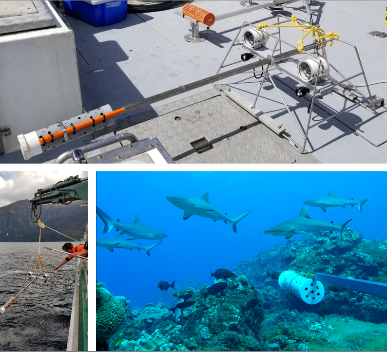

The BRUV method
Baited Remote Underwater Video, or BRUV, is considered the standard method for surveying fishes and habitats worldwide. BRUVs have several advantages over many other methods of sampling fish communities, in that is efficient, non-destructive, and less species- and size-selective. The video footage becomes a permanent record of the habitat and biological community.

The team at Sea Through Science have extensive experience with using underwater video methods across the world, including the Galapagos Islands1,2, New Caledonia, Fiji, Tonga, Rangitāhua/Kermadec Islands, the Poor Knights and Mokohinau Islands, all over the Hauraki Gulf3,4, and Fiordland. Adam co-authored the guide to the BRUV method5 and publications in Nature6 and Science7 as part of the Global FinPrint project.
Our BRUVs in the media
Kermit the Kermadec Island great white
An expedition to the Southwest Pacific
A global study of shark populations
Newshub: Sharks ‘functionally extinct’ at many coral reefs around the world